Honda F22 Engine Reference Library
Offline research package for the photographed 1994–1997 Accord engine. No model is included.
Provisional identity: These diagrams use the 1994 Accord 4 Door EX KL 4AT catalog as a SOHC VTEC reference. The photographed engine’s stamped code has not been confirmed. Exploded diagrams show assembly relationships and are not scale drawings.
Start here
- Skill input brief (Markdown) · Plain-text copy
- 1996 Honda service supplement (280 pages) — not the complete 1994–1997 manual.
- Combined parts catalog (CSV) · Source reading list
Your ten original photographs remain in Pictures of engine, beside the Honda Reference Library folder in your project.
The diagram images, parts tables and PDF work offline. Original-source links need an internet connection. Use browser zoom to enlarge text and drawings.
Diagram contents
Cylinder Head
Original catalog page · Open full-size image · Parts data (JSON)

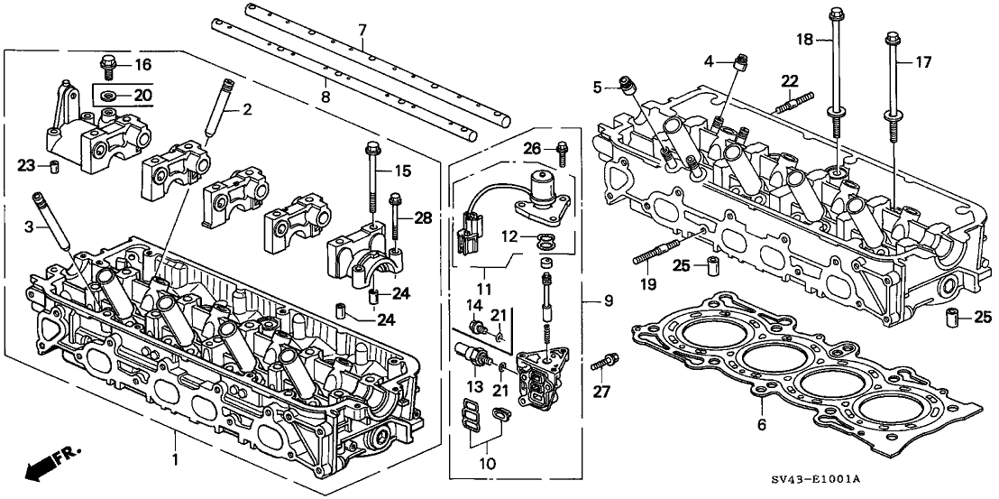
Show 27 catalog entries
Multiple entries for one callout can represent alternative sizes, suppliers or replacement numbers.
| Callout | Part number | Description | Catalog details |
|---|---|---|---|
| 1 | 12100-P0A-000 | Cylinder Head Assy. | |
| 2 | 12204-PJ7-305 | Guide, Valve (OVER SIZE) | Require Quantity: 8 Package Quantity: 1 |
| 3 | 12205-PJ7-305 | Guide, Exhaust Valve (OVER SIZE) | Require Quantity: 8 Package Quantity: 1 |
| 4 | 12210-PZ1-004 | Seal A, Valve Stem (NOK) | Require Quantity: 8 Package Quantity: 10 |
| 5 | 12211-PZ1-004 | Seal B, Valve Stem (NOK) | Require Quantity: 8 Package Quantity: 10 |
| 6 | 12251-P0A-004 | Gasket, Cylinder Head (NIPPON LEAKLESS) | |
| 7 | 14631-P0A-000 | Shaft, Inlet Rocker Arm | |
| 8 | 14633-P0A-000 | Shaft, Exhaust Rocker Arm | |
| 9 | 15810-P0A-005 | Valve Assy., Spool | |
| 10 | 15825-P0A-005 | Filter Assy., Spool Valve | Replaced By: 15825-P0A-015 |
| 11 | 36171-P0A-005 | Solenoid Assy. | Replaced By: 36171-P0A-015 |
| 12 | 36172-P0A-005 | Gasket, Solenoid Base | |
| 13 | 37250-P07-003 | Switch Assy., Valve Timing Oilpressure | |
| 15 | 90002-P0A-000 | Bolt, Flange (8X76) | Require Quantity: 10 Package Quantity: 1 |
| 16 | 90004-PE2-005 | Bolt, Sealing (10MM) | |
| 17 | 90005-PT0-003 | Bolt-Washer (12X163) | Require Quantity: 9 Package Quantity: 1 |
| 18 | 90006-PT0-003 | Bolt-Washer (12X199) | |
| 19 | 90026-PT0-000 | Bolt, Stud (8X38) | Require Quantity: 8 Package Quantity: 1 |
| 20 | 90401-PE2-003 | Washer, Sealing (10MM) | |
| 21 | 91319-PR3-003 | O-Ring (13X1.5) (ARAI) | |
| 22 | 92900-08025-1B | Bolt, Stud (8X25) | Require Quantity: 9 Package Quantity: 1 |
| 23 | 94301-08140 | Pin, Dowel (8X14) | |
| 24 | 94301-10160 | Pin, Dowel (10X16) | Require Quantity: 10 Package Quantity: 1 |
| 25 | 94301-14200 | Pin, Dowel (14X20) | Require Quantity: 2 Package Quantity: 10 |
| 26 | 95701-06018-08 | Bolt, Flange (6X18) | Require Quantity: 3 Package Quantity: 1 |
| 27 | 95701-06025-08 | Bolt, Flange (6X25) | Require Quantity: 3 Package Quantity: 1 |
| 28 | 95701-06045-07 | Bolt, Flange (6X45) | Require Quantity: 4 Package Quantity: 1 |
Valve – Rocker Arm
Original catalog page · Open full-size image · Parts data (JSON)

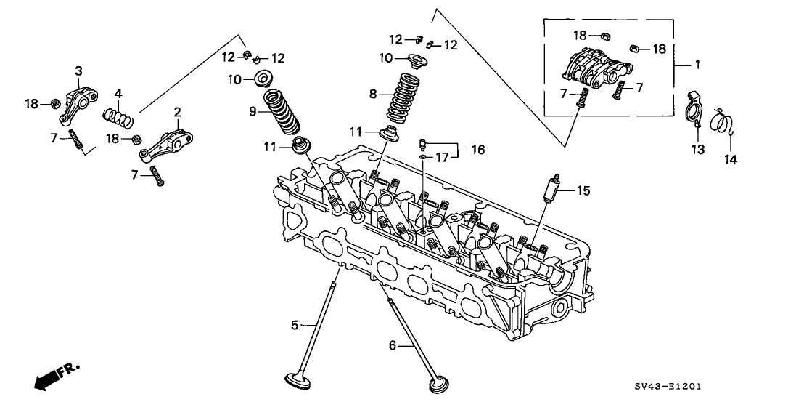
Show 18 catalog entries
Multiple entries for one callout can represent alternative sizes, suppliers or replacement numbers.
| Callout | Part number | Description | Catalog details |
|---|---|---|---|
| 1 | 14620-P0A-000 | Arm Assy., Inlet Rocker (JAPAN) | Require Quantity: 4 Package Quantity: 1 |
| 2 | 14624-P0A-000 | Arm A, Exhaust Rocker (JAPAN) | Require Quantity: 4 Package Quantity: 1 |
| 3 | 14625-P0A-000 | Arm B, Exhaust Rocker (JAPAN) | Require Quantity: 4 Package Quantity: 1 |
| 4 | 14646-P0A-000 | Spring, Exhaust Rocker Arm | Require Quantity: 4 Package Quantity: 1 |
| 5 | 14711-P0A-000 | Valve, Inlet (TMSS) | Require Quantity: 8 Package Quantity: 1 |
| 6 | 14721-P0A-000 | Valve, Exhaust (TMSS) | Require Quantity: 8 Package Quantity: 1 |
| 7 | 14744-PT0-004 | Screw, Tappet Adjusting | Require Quantity: 16 Package Quantity: 1 |
| 8 | 14761-P0A-004 | Spring, Inlet Valve (WHITE) (CHUO SPRING) | Require Quantity: 8 Package Quantity: 1 |
| 9 | 14762-P0A-004 | Spring, Exhaust Valve (VIOLET) (CHUO SPRING) | Require Quantity: 8 Package Quantity: 1 |
| 10 | 14765-PJ7-000 | Retainer, Valve Spring | Require Quantity: 16 Package Quantity: 1 |
| 11 | 14775-PM3-000 | Seat, Valve Spring | Require Quantity: 16 Package Quantity: 1 |
| 12 | 14781-PJ7-003 | Cotter, Valve (FUJI VALVE) | Require Quantity: 32 Package Quantity: 1 |
| 13 | 14811-P0A-000 | Plate, Timing | Require Quantity: 4 Package Quantity: 1 |
| 14 | 14812-P0A-000 | Spring, Timing Plate | Require Quantity: 4 Package Quantity: 1 |
| 15 | 14820-P0A-000 | Motion Assy., Lost | Require Quantity: 4 Package Quantity: 1 Replaced By: 14820-PAA-305 |
| 16 | 15140-P0A-000 | Orifice Assy., Cam Journal | |
| 17 | 15142-PE0-000 | O-Ring (4.8X1.9) | |
| 18 | 90206-PT0-004 | Nut, Tappet Adjusting | Require Quantity: 16 Package Quantity: 1 |
Camshaft – Timing Belt
Original catalog page · Open full-size image · Parts data (JSON)

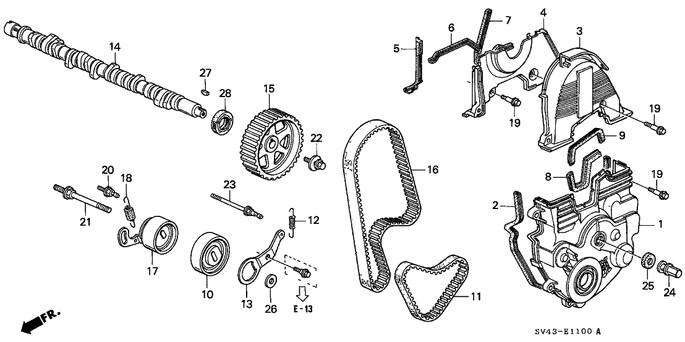
Show 29 catalog entries
Multiple entries for one callout can represent alternative sizes, suppliers or replacement numbers.
| Callout | Part number | Description | Catalog details |
|---|---|---|---|
| 1 | 11810-P0A-000 | Cover, Timing Belt (LOWER) | |
| 2 | 11811-PT0-000 | Rubber, Timing Belt Seal (LOWER) | |
| 3 | 11820-P0A-000 | Cover, Timing Belt (UPPER) | |
| 4 | 11830-P0A-000 | Cover, Timing Belt Back | |
| 5 | 11831-P0A-000 | Rubber A, Timing Belt Back Seal | |
| 6 | 11832-P0A-000 | Rubber B, Timing Belt Back Seal | |
| 7 | 11833-PT0-000 | Rubber C, Timing Belt Back Seal | |
| 8 | 11925-P0A-000 | Rubber A, Engine Mounting Bracket Seal | |
| 9 | 11926-P0A-000 | Rubber B, Engine Mounting Bracket Seal | |
| 10 | 13404-PT0-004 | Adjuster, Balancer Belt (NIPPON SEIKO) | |
| 11 | 13405-PT0-004 | Belt, Balancer Timing (UNITTA) | |
| 12 | 13407-P0A-000 | Spring, Belt Adjuster | |
| 13 | 13415-P0A-000 | Bracket, Balancer Belt Adjuster | |
| 14 | 14111-P0A-000 | Camshaft | |
| 15 | 14210-PT0-003 | Pulley, Timing Belt Driven | |
| 16 | 14400-P0A-004 | Belt, Timing (112RU24 D-100) (UNITTA) | |
| 17 | 14510-PT0-004 | Adjuster, Timing Belt (NIPPON SEIKO) | |
| 18 | 14516-P0A-000 | Spring, Timing Belt Adjuster | |
| 19 | 90007-679-000 | Bolt A, Timing Belt Cover | Require Quantity: 9 Package Quantity: 10 |
| 20 | 90015-PT0-000 | Bolt, Timing Belt Adjuster Spring | |
| 21 | 90016-PT0-000 | Bolt, Timing Belt Adjuster | |
| 22 | 90031-PT0-003 | Bolt-Washer (8X22) | Replaced By: 90032-ZW5-003 |
| 22 | 90032-ZW5-003 | Bolt-Washer (8X22) | |
| 23 | 90051-PT0-000 | Bolt, Sub-Belt Adjuster Spring | |
| 24 | 90216-P0A-000 | Nut (10MM) | |
| 25 | 90401-PT0-000 | Rubber, Timing Belt Adjuster | |
| 26 | 90501-MB7-610 | Washer (10.3X25) | |
| 27 | 90741-657-000 | Key (25.4X13) | |
| 28 | 91213-PT0-003 | Oil Seal (28X42X8) (ARAI) |
Crankshaft – Piston
Original catalog page · Open full-size image · Parts data (JSON)

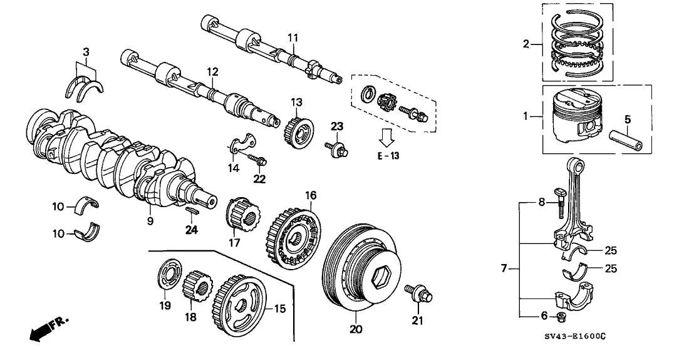
Show 57 catalog entries
Multiple entries for one callout can represent alternative sizes, suppliers or replacement numbers.
| Callout | Part number | Description | Catalog details |
|---|---|---|---|
| 1 | 13010-P0A-000 | Piston Set A (STD) | Require Quantity: 4 Package Quantity: 1 Replaced By: 13010-P1E-000 |
| 1 | 13020-P0A-000 | Piston Set B (STD) | Require Quantity: 4 Package Quantity: 1 Replaced By: 13020-P1E-000 |
| 1 | 13020-P1E-000 | Piston Set B (STD) | Require Quantity: 4 Package Quantity: 1 |
| 1 | 13030-P0A-000 | Piston Set (OVER SIZE) (0.25) | Replaced By: 13030-P0A-010 |
| 1 | 13040-P0A-000 | Piston Set (OVER SIZE) (0.50) | Replaced By: 13040-P0A-010 |
| 2 | 13011-PT2-003 | Ring Set, Piston (STD) (TEIKOKU) | Fit Note: Mfg.Origin: JPN Require Quantity: 4 Package Quantity: 1 Replaced By: 13011-P0A-004 |
| 2 | 13011-PT2-004 | Ring Set, Piston (STD) (RIKEN) | Fit Note: Mfg.Origin: JPN Require Quantity: 4 Package Quantity: 1 Replaced By: 13011-P0A-004 |
| 2 | 13021-PT1-003 | Ring Set, Piston (OVER SIZE) (0.25) (TEIKOKU) | Fit Note: Mfg.Origin: JPN, USA Replaced By: 13021-PT0-B03 |
| 2 | 13031-P0A-004 | Ring Set, Piston (OVER SIZE) (0.50) (RIKEN) | Fit Note: Mfg.Origin: USA |
| 2 | 13011-P0H-A03 | Ring Set, Piston (STD) | Fit Note: Mfg.Origin: USA Require Quantity: 4 Package Quantity: 1 Replaced By: 13011-P0A-004 |
| 2 | 13021-P0A-004 | Ring Set, Piston (OVER SIZE) (0.25) (RIKEN) | Fit Note: Mfg.Origin: USA |
| 2 | 13021-PT1-004 | Ring Set, Piston (OVER SIZE) (0.25) (RIKEN) | Fit Note: Mfg.Origin: JPN Replaced By: 13021-PT0-B04 |
| 2 | 13031-PT1-003 | Ring Set, Piston (OVER SIZE) (0.50) (TEIKOKU) | Fit Note: Mfg.Origin: JPN, USA Replaced By: 13031-PT0-B03 |
| 2 | 13031-PT1-004 | Ring Set, Piston (OVER SIZE) (0.50) (RIKEN) | Fit Note: Mfg.Origin: JPN Replaced By: 13031-PT0-B03 |
| 3 | 13014-P11-810 | Washer Set, Thrust (TAIHO) | |
| 5 | 13112-PT0-000 | Pin, Piston | Require Quantity: 4 Package Quantity: 1 |
| 6 | 13205-ME2-000 | Nut, Connecting Rod | Require Quantity: 8 Package Quantity: 1 |
| 7 | 13210-PT3-A00 | Rod, Connecting | Require Quantity: 4 Package Quantity: 1 |
| 8 | 13213-ME2-000 | Bolt, Connecting Rod | Require Quantity: 8 Package Quantity: 1 |
| 9 | 13310-P0A-000 | Crankshaft | |
| 10 | 13324-PT0-003 | Bearing D, Main (YELLOW) (DAIDO) | Fit Note: Mfg.Origin: JPN Require Quantity: 10 Package Quantity: 1 Replaced By: 13324-PT0-004 |
| 10 | 13323-PT0-004 | Bearing C, Main (GREEN) (TAIHO) | Fit Note: Mfg.Origin: JPN Require Quantity: 10 Package Quantity: 1 Replaced By: 13323-PT0-003 |
| 10 | 13325-PT0-003 | Bearing E, Main (PINK) (DAIDO) | Fit Note: Mfg.Origin: JPN, USA Require Quantity: 10 Package Quantity: 1 |
| 10 | 13321-P0H-A01 | Bearing A, Main (BLACK) (GLACIER VANDERVELL) | Fit Note: Mfg.Origin: USA Require Quantity: 10 Package Quantity: 1 Replaced By: 13321-PT0-004 |
| 10 | 13321-PT0-003 | Bearing A, Main (BLACK) (DAIDO) | Fit Note: Mfg.Origin: JPN Require Quantity: 10 Package Quantity: 1 Replaced By: 13321-PT0-004 |
| 10 | 13321-PT0-004 | Bearing A, Main (BLACK) (TAIHO) | Fit Note: Mfg.Origin: JPN Require Quantity: 10 Package Quantity: 1 |
| 10 | 13322-PT0-003 | Bearing B, Main (BROWN) (DAIDO) | Fit Note: Mfg.Origin: JPN, USA Require Quantity: 10 Package Quantity: 1 |
| 10 | 13323-P0H-A01 | Bearing C, Main (GREEN) (GLACIER VANDERVELL) | Fit Note: Mfg.Origin: USA Require Quantity: 10 Package Quantity: 1 Replaced By: 13323-PT0-003 |
| 10 | 13323-PT0-003 | Bearing C, Main (GREEN) (DAIDO) | Fit Note: Mfg.Origin: JPN Require Quantity: 10 Package Quantity: 1 |
| 10 | 13324-P0H-A01 | Bearing D, Main (YELLOW) (GLACIER VANDERVELL) | Fit Note: Mfg.Origin: USA Require Quantity: 10 Package Quantity: 1 Replaced By: 13324-PT0-004 |
| 10 | 13324-PT0-004 | Bearing D, Main (YELLOW) (TAIHO) | Fit Note: Mfg.Origin: JPN Require Quantity: 10 Package Quantity: 1 |
| 11 | 13400-PT3-010 | Shaft, RR. Balancer | |
| 12 | 13401-P5M-000 | Shaft, FR. Balancer | |
| 13 | 13402-PT7-A01 | Pulley B, FR. Timing Belt Driven | |
| 14 | 13406-PT0-003 | Metal F, Thrust Balancer Shaft | |
| 15 | 13408-PT0-003 | Pulley, Balancer Belt Drive | Replaced By: 13408-PT2-003 |
| 18 | 13621-P0A-003 | Pulley, Timing Belt Drive | |
| 19 | 13622-PV1-000 | Plate, Timing Belt Guide | |
| 20 | 13810-P0A-003 | Pulley, Crankshaft | |
| 21 | 90017-RJA-003 | Bolt-Washer (16X49) | |
| 22 | 90019-PT0-000 | Bolt, Flange (6X18) | Require Quantity: 2 Package Quantity: 1 |
| 23 | 90031-PT0-003 | Bolt-Washer (8X22) | Replaced By: 90032-ZW5-003 |
| 23 | 90032-ZW5-003 | Bolt-Washer (8X22) | |
| 24 | 90704-PT0-000 | Key (4.5X38.5) | |
| 25 | 13214-PH3-004 | Bearing D, Connecting Rod (GREEN) (TAIHO) | Fit Note: Mfg.Origin: JPN, USA Require Quantity: 8 Package Quantity: 1 |
| 25 | 13215-PH3-004 | Bearing E, Connecting Rod (YELLOW) (TAIHO) | Fit Note: Mfg.Origin: JPN, USA Require Quantity: 8 Package Quantity: 1 |
| 25 | 13211-PH3-003 | Bearing A, Connecting Rod (BLUE) (DAIDO) | Fit Note: Mfg.Origin: JPN Require Quantity: 8 Package Quantity: 1 Replaced By: 13211-PH3-004 |
| 25 | 13212-PH3-003 | Bearing B, Connecting Rod (BLACK) (DAIDO) | Fit Note: Mfg.Origin: JPN Require Quantity: 8 Package Quantity: 1 Replaced By: 13212-PH3-004 |
| 25 | 13211-P0H-A01 | Bearing A, Connecting Rod (BLUE) (GLACIER VANDERVELL) | Fit Note: Mfg.Origin: USA Require Quantity: 8 Package Quantity: 1 Replaced By: 13211-PH3-004 |
| 25 | 13211-PH3-004 | Bearing A, Connecting Rod (BLUE) (TAIHO) | Fit Note: Mfg.Origin: JPN Require Quantity: 8 Package Quantity: 1 |
| 25 | 13212-P0H-A01 | Bearing B, Connecting Rod (BLACK) (GLACIER VANDERVELL) | Fit Note: Mfg.Origin: USA Require Quantity: 8 Package Quantity: 1 Replaced By: 13212-PH3-004 |
| 25 | 13212-PH3-004 | Bearing B, Connecting Rod (BLACK) (TAIHO) | Fit Note: Mfg.Origin: JPN Require Quantity: 8 Package Quantity: 1 |
| 25 | 13213-PH3-004 | Bearing C, Connecting Rod (BROWN) (TAIHO) | Fit Note: Mfg.Origin: JPN, USA Require Quantity: 8 Package Quantity: 1 |
| 25 | 13216-PH3-004 | Bearing F, Connecting Rod (PINK) (TAIHO) | Fit Note: Mfg.Origin: JPN, USA Require Quantity: 8 Package Quantity: 1 |
| 25 | 13217-P0H-A01 | Bearing G, Connecting Rod (RED) (GLACIER VANDERVELL) | Fit Note: Mfg.Origin: USA Require Quantity: 8 Package Quantity: 1 Replaced By: 13217-PH3-004 |
| 25 | 13217-PH3-003 | Bearing G, Connecting Rod (RED) (DAIDO) | Fit Note: Mfg.Origin: JPN Require Quantity: 8 Package Quantity: 1 Replaced By: 13217-PH3-004 |
| 25 | 13217-PH3-004 | Bearing G, Connecting Rod (RED) (TAIHO) | Fit Note: Mfg.Origin: JPN Require Quantity: 8 Package Quantity: 1 |
Cylinder Block – Oil Pan
Original catalog page · Open full-size image · Parts data (JSON)

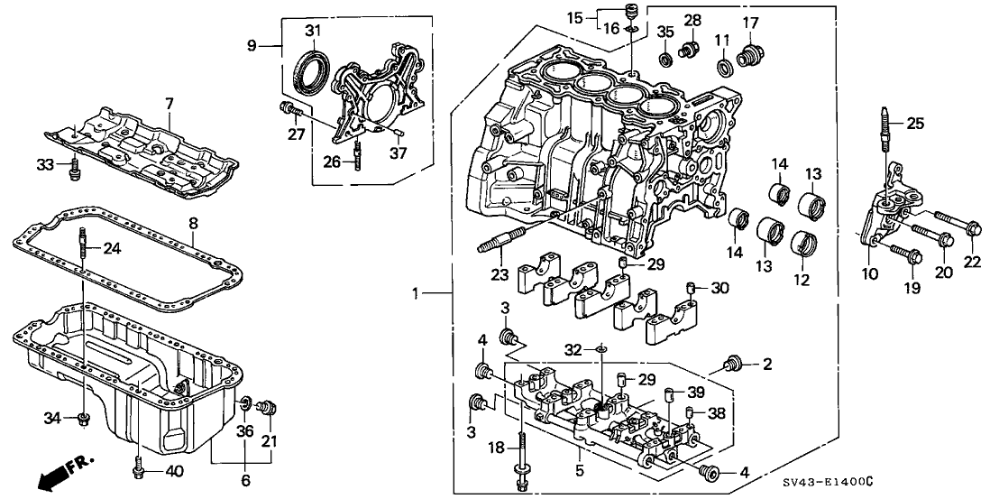
Show 41 catalog entries
Multiple entries for one callout can represent alternative sizes, suppliers or replacement numbers.
| Callout | Part number | Description | Catalog details |
|---|---|---|---|
| 1 | 11000-P0A-000 | Block Assy., Cylinder | Fit Note: Mfg.Origin: JPN Replaced By: 11000-P0A-305 |
| 1 | 11000-P0H-000 | Block Assy., Cylinder | Fit Note: Mfg.Origin: USA Replaced By: 11000-P0A-406 |
| 2 | 11106-PT0-300 | Bolt, Sealing (16MM) | |
| 3 | 11107-PT0-000 | Bolt, Sealing (16MM) | Require Quantity: 2 Package Quantity: 1 Replaced By: 11107-PAA-A00 |
| 4 | 11126-PK1-003 | Bolt, Sealing (22MM) | Require Quantity: 4 Package Quantity: 1 |
| 5 | 11130-PT0-000 | Bridge, Bearing Cap | Replaced By: 11130-PT0-030 |
| 6 | 11200-PT0-010 | Pan, Oil | |
| 7 | 11221-PT2-000 | Plate, Baffle | |
| 8 | 11251-P0A-000 | Gasket, Oil Pan | |
| 9 | 11300-PT0-B00 | Cover Assy., R. Side | Replaced By: 11300-PT0-000 |
| 10 | 11910-P0A-010 | Bracket, Engine Mounting | |
| 11 | 12207-634-300 | Washer, Sealing Bolt | |
| 12 | 13421-PT0-003 | Metal, Balancer Shaft (NO.1) (DAIDO) | |
| 13 | 13422-PT0-013 | Metal, Balancer Shaft (NO.2) (DAIDO) | Require Quantity: 2 Package Quantity: 1 |
| 14 | 13423-PT0-003 | Metal, Balancer Shaft (NO.3) (DAIDO) | Require Quantity: 2 Package Quantity: 1 |
| 17 | 90001-PM3-003 | Bolt, Drain Plug (28MM) | |
| 18 | 90007-PAA-T01 | Bolt-Washer (11X121) | Require Quantity: 10 Package Quantity: 1 |
| 19 | 90008-PM3-000 | Bolt, Mounting Bracket (10X32.5) | |
| 20 | 90008-P0A-000 | Bolt, Mounting Bracket (10X53) | |
| 21 | 90009-PH1-000 | Bolt, Drain Plug (14MM) | |
| 22 | 90009-P0A-000 | Bolt B, Mounting Bracket (10X56.2) | |
| 23 | 90030-PT0-000 | Bolt, Stud (10X35) | Require Quantity: 2 Package Quantity: 1 |
| 24 | 90041-PA5-000 | Bolt, Stud (6X28) | Require Quantity: 2 Package Quantity: 1 |
| 25 | 90041-PT0-000 | Bolt, Stud (12X60) | |
| 26 | 90042-PR3-000 | Bolt, Stud (6X28) | Require Quantity: 2 Package Quantity: 1 |
| 27 | 95701-06018-08 | Bolt, Flange (6X18) | Require Quantity: 10 Package Quantity: 1 |
| 27 | 90051-PH7-000 | Bolt, Flange (6X18) | Require Quantity: 10 Package Quantity: 1 Replaced By: 95701-06018-08 |
| 28 | 90061-PT0-000 | Bolt, Drain Plug (12MM) | |
| 29 | 90705-PT0-000 | Pin, Dowel (16X22) | Require Quantity: 2 Package Quantity: 1 |
| 30 | 90715-PC6-000 | Pin, Dowel (13X20) | Require Quantity: 11 Package Quantity: 1 |
| 31 | 91214-PLE-003 | Oil Seal (80X100X10) (NOK) | |
| 31 | 91214-PH3-751 | Oil Seal (80X100X10) (ARAI) | Replaced By: 91214-PLE-003 |
| 32 | 91323-PH7-003 | Gasket, Bearing Cap Bridge (ARAI) | |
| 33 | 93404-06016-08 | Bolt-Washer (6X16) | Require Quantity: 4 Package Quantity: 1 |
| 34 | 94050-06080 | Nut, Flange (6MM) | Require Quantity: 6 Package Quantity: 10 |
| 35 | 94109-12000 | Washer, Drain Plug (12MM) | |
| 36 | 94109-14000 | Washer, Drain Plug (14MM) | |
| 37 | 94301-06100 | Pin, Dowel (6X10) | Require Quantity: 2 Package Quantity: 1 |
| 38 | 94301-10160 | Pin, Dowel (10X16) | Require Quantity: 6 Package Quantity: 1 |
| 39 | 94301-12200 | Pin, Dowel (12X20) | Require Quantity: 3 Package Quantity: 1 |
| 40 | 95701-06018-08 | Bolt, Flange (6X18) | Require Quantity: 12 Package Quantity: 1 |
Oil Pump – Oil Strainer
Original catalog page · Open full-size image · Parts data (JSON)

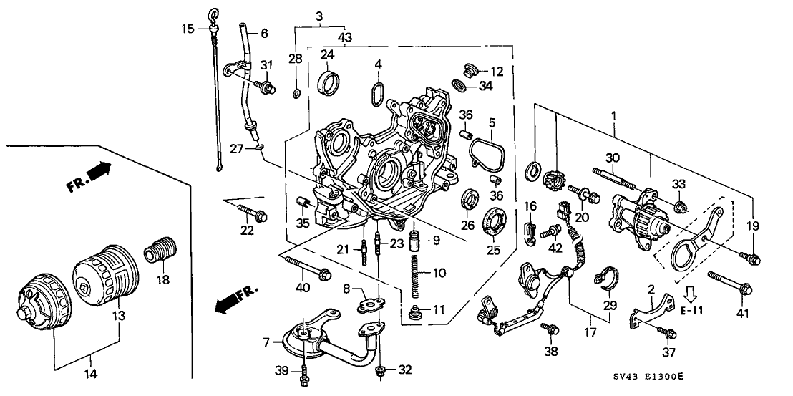
Show 35 catalog entries
Multiple entries for one callout can represent alternative sizes, suppliers or replacement numbers.
| Callout | Part number | Description | Catalog details |
|---|---|---|---|
| 1 | 13500-PT0-J00 | Case Set, Gear | |
| 3 | 15100-PT0-020 | Pump Assy., Oil | Replaced By: 15100-PT0-030 |
| 4 | 15113-PT0-003 | Gasket A, Oil Pump (ARAI) | |
| 5 | 15114-PT0-003 | Gasket B, Oil Pump (ARAI) | |
| 6 | 15200-P0A-000 | Pipe, Oil Level | |
| 7 | 15220-P0A-C00 | Strainer, Oil | |
| 8 | 15221-P5K-004 | Gasket, Oil Strainer | |
| 9 | 15231-PE0-000 | Valve, Relief | |
| 10 | 15232-PG6-000 | Spring, Relief Valve | |
| 11 | 15233-PC6-000 | Bolt, Sealing (18MM) | |
| 12 | 15233-PK1-000 | Bolt, Sealing (20MM) | |
| 13 | 15400-PT7-005 | Filter, Oil (ALLIED SIGNAL USA) | Replaced By: 15400-PLM-A02 |
| 14 | 15400-PR3-305 | Cartridge Set, Oil Filter (TOYO ROKI) | |
| 15 | 15650-P0A-013 | Dipstick, Oil | |
| 18 | 90015-PH1-013 | Holder, Oil Filter | |
| 19 | 90018-PT0-010 | Bolt, Balancer Belt Adjuster | |
| 20 | 90023-PT0-003 | Bolt-Washer (8X33) | |
| 21 | 90042-PR3-000 | Bolt, Stud (6X28) | Require Quantity: 2 Package Quantity: 1 |
| 22 | 90052-PK1-000 | Bolt, Flange (6X25) | Require Quantity: 5 Package Quantity: 1 |
| 23 | 90063-PC6-000 | Bolt, Stud (6X25) | Require Quantity: 2 Package Quantity: 1 |
| 24 | 90703-PT0-000 | Pin, Dowel (49X10) | |
| 25 | 91212-P0A-004 | Oil Seal (40X52X7) (ARAI) | |
| 26 | 91233-PT0-003 | Oil Seal (27X40X8) (NOK) | |
| 27 | 91309-PJ7-010 | O-Ring (11.5X3.5) | |
| 28 | 91313-PC9-003 | O-Ring (9X2.3) (NOK) | |
| 30 | 92900-08055-0B | Bolt, Stud (8X55) | |
| 31 | 93401-06012-08 | Bolt-Washer (6X12) | |
| 32 | 94050-06080 | Nut, Flange (6MM) | Require Quantity: 2 Package Quantity: 10 |
| 33 | 94050-08080 | Nut, Flange (8MM) | |
| 34 | 94109-20000 | Washer, Drain Plug (20MM) | |
| 35 | 94301-08140 | Pin, Dowel (8X14) | |
| 36 | 94301-10120 | Pin, Dowel (10X12) | Require Quantity: 2 Package Quantity: 1 |
| 39 | 95701-06018-08 | Bolt, Flange (6X18) | Require Quantity: 2 Package Quantity: 1 |
| 40 | 95701-06050-08 | Bolt, Flange (6X50) | Require Quantity: 2 Package Quantity: 1 |
| 41 | 95701-08055-08 | Bolt, Flange (8X55) | Require Quantity: 2 Package Quantity: 1 |
Water Pump – Sensor
Original catalog page · Open full-size image · Parts data (JSON)

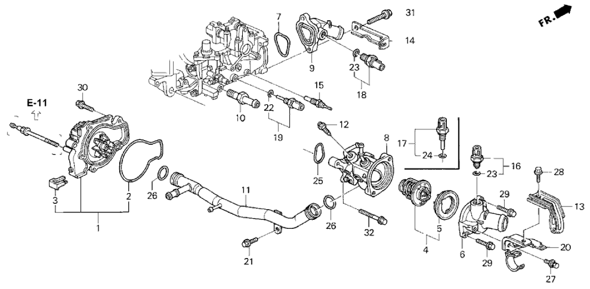
Show 32 catalog entries
Multiple entries for one callout can represent alternative sizes, suppliers or replacement numbers.
| Callout | Part number | Description | Catalog details |
|---|---|---|---|
| 1 | 19200-P0A-003 | Water Pump (YAMADA) | |
| 2 | 19222-PT0-300 | Gasket, Water Pump | |
| 3 | 19223-PT0-000 | Rubber, Water Pump Seal | |
| 4 | 19301-PAA-306 | Thermostat Assy. (NIPPON THERMOSTAT) | |
| 4 | 19301-P08-316 | Thermostat Assy. (NIPPON THERMOSTAT) | Replaced By: 19301-PAA-306 |
| 5 | 19305-PT0-000 | Rubber, Thermostat Mounting | Replaced By: 19305-PLC-A00 |
| 6 | 19311-P0A-000 | Cover, Thermostat | |
| 7 | 19313-PT0-000 | Gasket, Thermostat Case | |
| 8 | 19320-P0A-000 | Case, Thermostat (WITH 3-NIPPLE) | |
| 9 | 19360-PT3-A00 | Cover, Water Outlet | |
| 10 | 19500-PT0-000 | Joint, Tube | |
| 11 | 19505-P0A-000 | Pipe, Connecting | |
| 12 | 19516-PC1-000 | Bolt, Breathing Water | |
| 13 | 32745-P0A-A00 | Clamp E, Engine Wire Harness | |
| 14 | 32751-P0A-A00 | Stay C, Engine Harness | |
| 15 | 37750-PH2-014 | Thermo Unit (DENSO) | |
| 17 | 37773-PT0-004 | Sensor, Thermo (A-93) (TEC) | |
| 18 | 37773-PT3-505 | Switch (A-106) | |
| 19 | 37870-PK2-015 | Sensor Assy., Water Temperature (HADSYS) | |
| 20 | 79746-SV4-000 | Clamp, Heater Hose | |
| 21 | 90002-PD2-000 | Bolt, Flange (8X16) | |
| 22 | 91307-PK2-005 | O-Ring (9.5X1.5) (HONDA KIKAKI) | |
| 23 | 91307-PN3-000 | O-Ring (17.8X1.4) | |
| 24 | 91307-PH7-660 | O-Ring (13.5X1.4) | |
| 25 | 91312-P0A-000 | Gasket, Thermostat Case | |
| 26 | 91314-PH7-003 | O-Ring (31.2X4.1) (NOK) | Require Quantity: 2 Package Quantity: 1 |
| 27 | 93403-06012-04 | Bolt-Washer (6X12) | |
| 28 | 95701-06012-08 | Bolt, Flange (6X12) | |
| 29 | 95701-06020-08 | Bolt, Flange (6X20) | Require Quantity: 2 Package Quantity: 1 |
| 30 | 95701-06022-08 | Bolt, Flange (6X22) | Require Quantity: 4 Package Quantity: 10 |
| 31 | 95701-08025-08 | Bolt, Flange (8X25) | Require Quantity: 2 Package Quantity: 1 |
| 32 | 95701-08030-08 | Bolt, Flange (8X30) | Require Quantity: 2 Package Quantity: 1 |
Intake Manifold
Original catalog page · Open full-size image · Parts data (JSON)

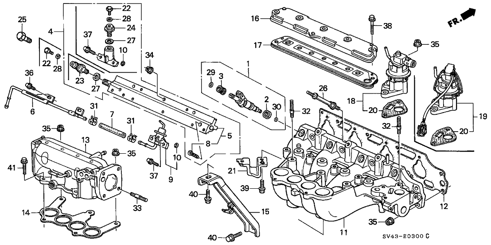
Show 39 catalog entries
Multiple entries for one callout can represent alternative sizes, suppliers or replacement numbers.
| Callout | Part number | Description | Catalog details |
|---|---|---|---|
| 1 | 06164-P0A-A00 | Injector Set, Fuel | Require Quantity: 4 Package Quantity: 1 |
| 2 | 16472-PH7-003 | Seal Ring, Injector (OTSUKA) | Require Quantity: 4 Package Quantity: 1 Replaced By: 16472-P0H-A01 |
| 2 | 16472-P0H-A01 | Seal Ring, Injector (NOK) | Require Quantity: 4 Package Quantity: 1 |
| 3 | 16473-P10-A01 | Cushion Ring, Injector (NOK) | Require Quantity: 4 Package Quantity: 1 |
| 4 | 16610-P0A-A00 | Pipe, Fuel | |
| 5 | 16610-P0A-S00 | Pipe, Fuel | |
| 6 | 16612-P0A-000 | Pipe, Fuel Return | |
| 7 | 16613-P0A-000 | Hose, Fuel Return | |
| 8 | 16614-P0A-000 | Mesh, Fuel Filter | |
| 9 | 16740-P0A-003 | Regulator Assy., Pressure | |
| 10 | 16741-PG7-005 | O-Ring, Pressure Regulator | Require Quantity: 2 Package Quantity: 1 |
| 11 | 17100-P0A-A00 | Manifold A, Inlet | |
| 12 | 17105-P0A-A02 | Gasket A, Inlet Manifold (NIPPON LEAKLESS) | |
| 13 | 17110-P0A-A00 | Manifold B, Inlet (HAD) | |
| 14 | 17115-P0A-003 | Gasket B, Inlet Manifold (ISHINO GASKET) | |
| 15 | 17125-P0A-000 | Stay, Inlet Manifold | |
| 16 | 17145-P0A-000 | Chamber, EGR | |
| 17 | 17146-P0A-004 | Gasket, EGR Chamber | |
| 18 | 18011-P0A-A00 | Valve Set, EGR | |
| 20 | 18715-PB2-000 | Gasket, EGR Valve (ISHINO GASKET) | |
| 21 | 32759-P0A-A00 | Stay J, Engine Wire Harness | |
| 22 | 90009-RMX-010 | Bolt, Sealing 6Mm | |
| 24 | 90020-P0A-003 | Bolt, Sealing (12MM) | |
| 26 | 90027-P0A-003 | Bolt A, Fuel Pipe | Require Quantity: 3 Package Quantity: 1 Replaced By: 90027-P0A-305 |
| 27 | 90428-PD6-003 | Washer, Sealing (12MM) | |
| 28 | 90430-PD6-003 | Washer, Sealing (6MM) | |
| 29 | 91301-P2F-A01 | O-Ring (7.3X2.2) (NOK) | Require Quantity: 4 Package Quantity: 1 |
| 30 | 91302-P0A-A00 | O-Ring (10X1.7) | Require Quantity: 4 Package Quantity: 1 |
| 31 | 91406-SL4-931 | Clamp, Fuel Hose (D10.5) | Require Quantity: 2 Package Quantity: 1 |
| 32 | 92900-08022-0B | Bolt, Stud (8X22) | Require Quantity: 4 Package Quantity: 1 |
| 33 | 92900-08035-1B | Bolt, Stud (8X35) | Require Quantity: 4 Package Quantity: 1 |
| 34 | 94050-06080 | Nut, Flange (6MM) | Require Quantity: 3 Package Quantity: 10 |
| 35 | 94050-08080 | Nut, Flange (8MM) | Require Quantity: 13 Package Quantity: 10 |
| 36 | 95701-06010-08 | Bolt, Flange (6X10) | Require Quantity: 2 Package Quantity: 1 |
| 37 | 95701-06014-08 | Bolt, Flange (6X14) | Require Quantity: 4 Package Quantity: 1 |
| 38 | 95701-06030-08 | Bolt, Flange (6X30) | Require Quantity: 5 Package Quantity: 1 |
| 39 | 95701-08016-08 | Bolt, Flange (8X16) | |
| 40 | 95701-08018-08 | Bolt, Flange (8X18) | Require Quantity: 2 Package Quantity: 1 |
| 41 | 95701-08025-08 | Bolt, Flange (8X25) | Require Quantity: 3 Package Quantity: 1 |
Cylinder Head Cover
Original catalog page · Open full-size image · Parts data (JSON)

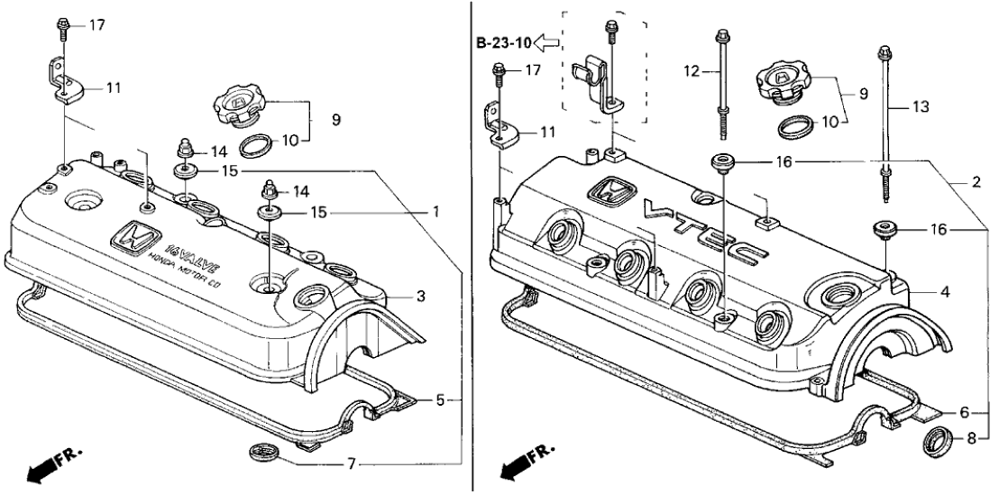
Show 12 catalog entries
Multiple entries for one callout can represent alternative sizes, suppliers or replacement numbers.
| Callout | Part number | Description | Catalog details |
|---|---|---|---|
| 2 | 12030-P0A-000 | Gasket Set, Head Cover | |
| 4 | 12310-P0A-000 | Cover, Cylinder Head | |
| 6 | 12341-P0A-000 | Gasket, Cylinder Head Cover | |
| 8 | 12342-RYE-004 | Seal, Spark Plug T | Require Quantity: 4 Package Quantity: 1 |
| 8 | 12342-P2F-A01 | Seal, Spark Plug Tube (NOK) | Require Quantity: 4 Package Quantity: 1 Replaced By: 12342-RYE-004 |
| 9 | 15610-PC6-000 | Cap Assy., Oil Filler | |
| 10 | 15613-PC6-000 | Gasket, Oil Filler | |
| 11 | 32762-PT0-010 | Stay B, Ignition Wire Clamp | Require Quantity: 2 Package Quantity: 1 |
| 12 | 90013-P0A-000 | Bolt A, Head Cover | Require Quantity: 2 Package Quantity: 1 |
| 13 | 90014-P07-000 | Bolt B, Head Cover | Require Quantity: 3 Package Quantity: 1 |
| 16 | 90442-P0A-000 | Washer, Head Cover | Require Quantity: 5 Package Quantity: 1 |
| 17 | 96001-06010-07 | Bolt, Flange (6X10) | Require Quantity: 2 Package Quantity: 1 |
Exhaust Manifold
Original catalog page · Open full-size image · Parts data (JSON)

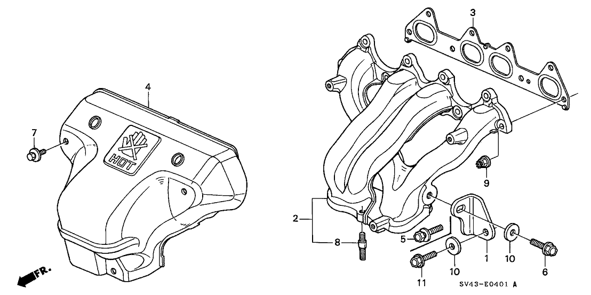
Show 11 catalog entries
Multiple entries for one callout can represent alternative sizes, suppliers or replacement numbers.
| Callout | Part number | Description | Catalog details |
|---|---|---|---|
| 1 | 11942-P0A-000 | Stay, L. Exhaust Manifold | |
| 2 | 18000-P0A-010 | Manifold Assy., Exhaust | |
| 3 | 18115-P0A-003 | Gasket, Exhaust Manifold (NIPPON LEAKLESS) | |
| 4 | 18120-P0A-A00 | Cover A, Exhaust Manifold | |
| 5 | 90005-P0A-000 | Bolt-Washer (10X22) | |
| 6 | 90010-PE2-900 | Bolt, Special (10X22) | |
| 7 | 90015-PT0-J00 | Bolt-Washer (8X14) | Require Quantity: 3 Package Quantity: 1 |
| 8 | 90065-PC1-300 | Bolt, Stud (10X34.5) | Require Quantity: 3 Package Quantity: 1 |
| 9 | 90212-RCA-A01 | Nut, Self-Lock (8MM) | Require Quantity: 8 Package Quantity: 10 |
| 10 | 90451-PE2-000 | Washer, Special (11X28) | Require Quantity: 2 Package Quantity: 1 |
| 11 | 95701-10022-08 | Bolt, Flange (10X22) |
Throttle Body
Original catalog page · Open full-size image · Parts data (JSON)

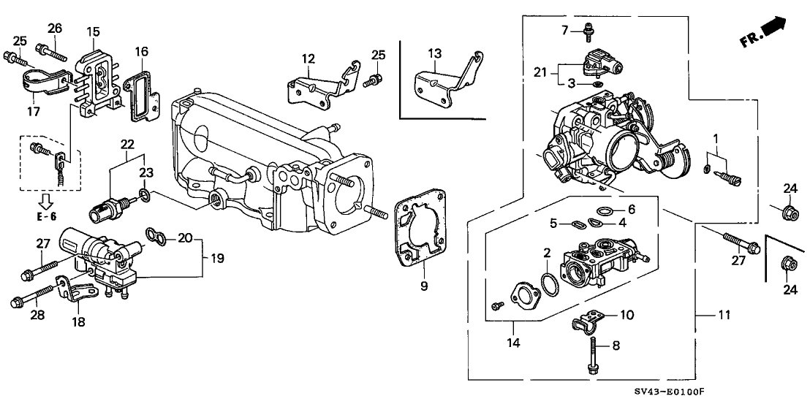
Show 28 catalog entries
Multiple entries for one callout can represent alternative sizes, suppliers or replacement numbers.
| Callout | Part number | Description | Catalog details |
|---|---|---|---|
| 1 | 16016-PM6-005 | Screw Set | |
| 2 | 16075-PE2-005 | O-Ring (31.2X1.9) | |
| 3 | 16075-P07-000 | O-Ring (9.8X1.9) | |
| 4 | 16076-P64-000 | O-Ring | |
| 5 | 16077-P06-A00 | O-Ring | |
| 6 | 16078-P06-A00 | O-Ring (15.8X1.9) | |
| 7 | 16080-P07-000 | Screw-Washer (4X16) | Require Quantity: 2 Package Quantity: 1 |
| 8 | 16081-P06-A00 | Bolt, Flange (6X40) | Require Quantity: 3 Package Quantity: 1 |
| 9 | 16176-P0A-004 | Gasket, Throttle Body (NIPPON LEAKLESS) | |
| 10 | 16179-P06-A00 | Binder | |
| 11 | 16400-P0A-A60 | Body Assy., Throttle (GR31B) | |
| 12 | 16411-P0A-A00 | Stay, Throttle Wire | |
| 14 | 16500-P0A-A51 | Valve Assy., Fast Idle (AF42D) | |
| 15 | 17111-P0H-A00 | Chamber, Boost | |
| 16 | 17112-P0A-004 | Gasket, Boost Chamber | |
| 17 | 32742-P0A-A00 | Clamp B, Engine Wire Harness | |
| 18 | 32752-P0A-A00 | Stay D, Engine Wire Harness | |
| 19 | 36450-P0A-A01 | Valve Assy., Electronic Air Control (KEIHIN) | |
| 20 | 36455-PT3-A01 | Gasket, Electronic Air Control Valve (DENSO) | |
| 21 | 37830-PAA-S00 | Sensor Set, Map | |
| 22 | 37880-P0A-A02 | Sensor Assy., Air Temperature | |
| 23 | 91303-P0A-A02 | O-Ring | |
| 24 | 94050-08080 | Nut, Flange (8MM) | Fit Note: Mfg.Origin: JPN Require Quantity: 2 Package Quantity: 10 |
| 24 | 94050-08080 | Nut, Flange (8MM) | Fit Note: Mfg.Origin: USA Require Quantity: 4 Package Quantity: 10 |
| 25 | 95701-06014-08 | Bolt, Flange (6X14) | Require Quantity: 3 Package Quantity: 1 |
| 26 | 95701-06025-08 | Bolt, Flange (6X25) | Require Quantity: 2 Package Quantity: 1 |
| 27 | 95701-08040-08 | Bolt, Flange (8X40) | |
| 28 | 95701-08045-08 | Bolt, Flange (8X45) |
Distributor (Hitachi)
Original catalog page · Open full-size image · Parts data (JSON)

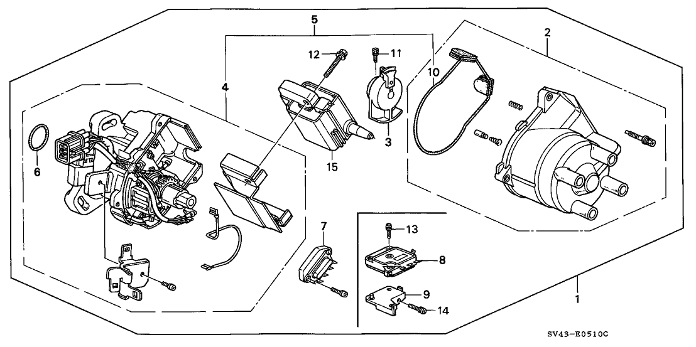
Show 11 catalog entries
Multiple entries for one callout can represent alternative sizes, suppliers or replacement numbers.
| Callout | Part number | Description | Catalog details |
|---|---|---|---|
| 1 | 30100-P0A-A01 | Distributor Assy. (D4T92-04) (HITACHI) (N/A: SEE COMPONENTS) | Replaced By: 30100-P0A-A02 |
| 2 | 30102-P2M-A01 | Cap Assy. | |
| 3 | 30103-PAA-A01 | Head, Rotor | |
| 4 | 30105-P0A-A01 | Housing, Distributor | |
| 6 | 30110-PC6-005 | O-Ring | |
| 7 | 30120-P0A-A01 | Igniter Unit (HITACHI) | |
| 10 | 30132-P0A-A01 | Gasket (1) | |
| 11 | 30135-P0A-A01 | Bolt-Washer (5X14) | |
| 12 | 30136-P0A-A01 | Bolt-Washer (6X30) | Require Quantity: 2 Package Quantity: 1 |
| 13 | 30137-P0A-A01 | Screw, Pan (4X12) | Require Quantity: 2 Package Quantity: 1 |
| 15 | 30500-PCA-003 | Coil, Ignition |
High Tension Cord – Spark Plug
Original catalog page · Open full-size image · Parts data (JSON)

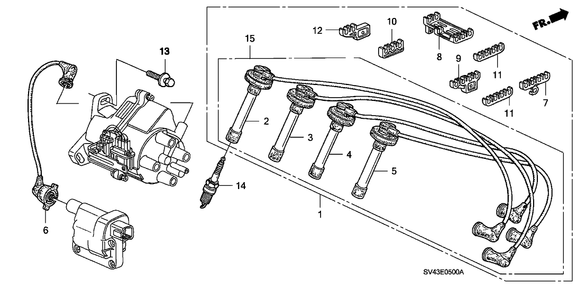
Show 14 catalog entries
Multiple entries for one callout can represent alternative sizes, suppliers or replacement numbers.
| Callout | Part number | Description | Catalog details |
|---|---|---|---|
| 1 | 32700-P0A-A00 | Wire Assy., Ignition (SUMITOMO) | |
| 2 | 32701-P0A-A00 | Wire, Resistance (NO.1) (SUMITOMO) | |
| 3 | 32702-P0A-A00 | Wire, Resistance (NO.2) (SUMITOMO) | |
| 4 | 32703-P0A-A00 | Wire, Resistance (NO.3) (SUMITOMO) | |
| 5 | 32704-P0A-A00 | Wire, Resistance (NO.4) (SUMITOMO) | |
| 9 | 32766-PM3-000 | Clamp B, Ignition Wire | |
| 10 | 32766-P0A-A00 | Clamp C, Ignition Wire | |
| 11 | 32767-PT0-000 | Grommet, Ignition Wire | |
| 12 | 32767-P0A-A00 | Clamp A, Ignition Wire | |
| 13 | 90003-P01-000 | Bolt-Washer (8X28) | Require Quantity: 3 Package Quantity: 1 |
| 14 | 98079-5514G | Spark Plug (ZFR5F-11) (NGK) | Require Quantity: 4 Package Quantity: 10 |
| 14 | 98079-5615G | Spark Plug (KJ20CR-L11) (DENSO) | |
| 14 | 98079-5515G | Spark Plug (KJ16CR-L11) (DENSO) | Require Quantity: 4 Package Quantity: 1 |
| 14 | 98079-5614G | Spark Plug (ZFR6F-11) (NGK) |
Breather Tube
Original catalog page · Open full-size image · Parts data (JSON)

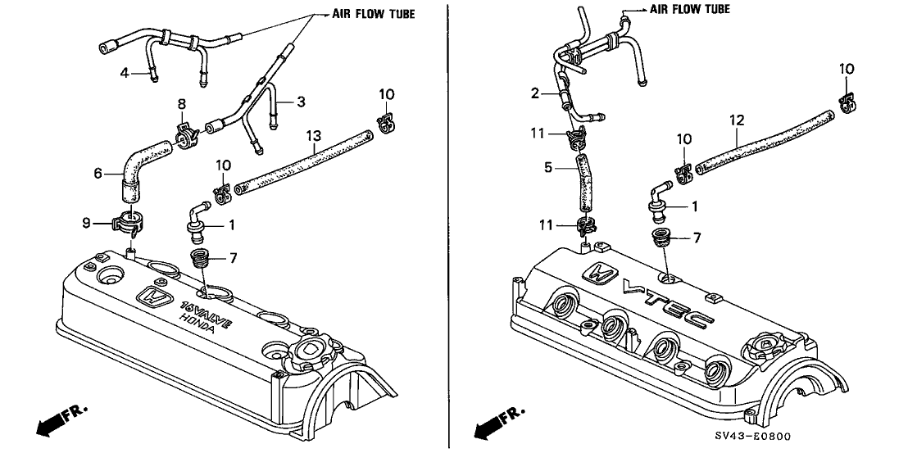
Show 7 catalog entries
Multiple entries for one callout can represent alternative sizes, suppliers or replacement numbers.
| Callout | Part number | Description | Catalog details |
|---|---|---|---|
| 1 | 17130-PK1-003 | Valve Assy., PCV | |
| 2 | 17137-P0A-A00 | Pipe, Breather | |
| 5 | 17138-P0A-000 | Tube, Breather | |
| 7 | 17139-PK1-000 | Grommet, PCV Valve | |
| 10 | 95002-41200-04 | Clamp, Tube (D12) | Require Quantity: 2 Package Quantity: 1 |
| 11 | 95002-41300-04 | Clamp, Tube (D13) | Require Quantity: 2 Package Quantity: 1 |
| 12 | 95005-75003-10M | Bulk Hose, Vacuum (7.3X3000) OEM CUT SIZE: (7.3X225) |
Water Hose
Original catalog page · Open full-size image · Parts data (JSON)

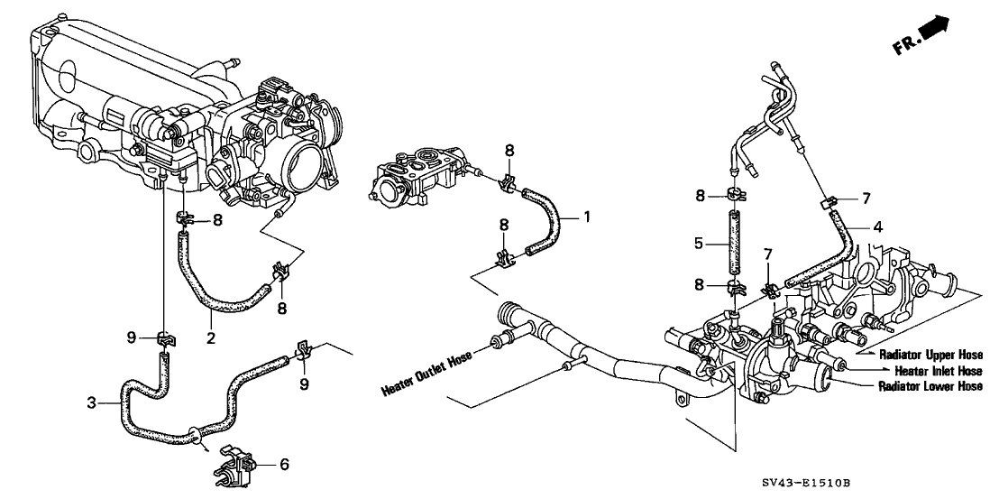
Show 9 catalog entries
Multiple entries for one callout can represent alternative sizes, suppliers or replacement numbers.
| Callout | Part number | Description | Catalog details |
|---|---|---|---|
| 1 | 19507-P0A-000 | Hose, Fast Idle Valve Control | |
| 2 | 19508-P0A-000 | Hose A, Electronic Air Control Valve | |
| 3 | 19510-P0A-000 | Hose B, Electronic Air Control Valve | |
| 4 | 19514-P0A-000 | Hose A, Breather Heater | Replaced By: 19514-P0A-305 |
| 5 | 19515-P0A-000 | Hose B, Breather Heater | |
| 6 | 19517-P08-003 | Clamp, Hose (13MM) | |
| 7 | 91405-PD1-004 | Clamp, Tube (D12) | Require Quantity: 2 Package Quantity: 1 |
| 8 | 91405-PD1-004 | Clamp, Tube (D12) | Require Quantity: 6 Package Quantity: 1 |
| 9 | 95002-41250-04 | Clamp, Tube (D12.5) | Require Quantity: 2 Package Quantity: 1 |
Install Pipe – Tubing
Original catalog page · Open full-size image · Parts data (JSON)

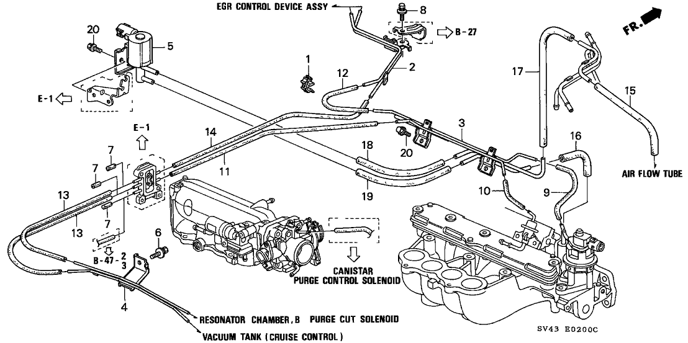
Show 20 catalog entries
Multiple entries for one callout can represent alternative sizes, suppliers or replacement numbers.
| Callout | Part number | Description | Catalog details |
|---|---|---|---|
| 1 | 17205-PC6-000 | Clamp, Tube (7.5X2) | |
| 2 | 17400-P0B-A00 | Pipe A, Install | |
| 3 | 17410-P0A-A00 | Pipe B, Install | |
| 4 | 17430-P0A-A00 | Pipe C, Install | |
| 5 | 36281-P0A-A01 | Valve, Air Assist Solenoid | |
| 6 | 90146-SA7-000 | Bolt-Washer (6X16) (DACRO COATING) | Replaced By: 93405-06016-04 |
| 8 | 93403-06016-08 | Bolt-Washer (6X16) | |
| 9 | 95005-35008-10M | Bulk Hose, Vacuum (3.5X8000) OEM CUT SIZE: (3.5X70) | |
| 10 | 95005-35008-10M | Bulk Hose, Vacuum (3.5X8000) OEM CUT SIZE: (3.5X65) | |
| 11 | 95005-35008-10M | Bulk Hose, Vacuum (3.5X8000) OEM CUT SIZE: (3.5X115) | |
| 12 | 95005-35008-10M | Bulk Hose, Vacuum (3.5X8000) OEM CUT SIZE: (3.5X190) | |
| 13 | 95005-35008-10M | Bulk Hose, Vacuum (3.5X8000) OEM CUT SIZE: (3.5X195) | Require Quantity: 2 Package Quantity: 1 |
| 14 | 95005-35008-10M | Bulk Hose, Vacuum (3.5X8000) OEM CUT SIZE: (3.5X265) | |
| 15 | 95005-53008-10M | Bulk Hose, Vacuum (5.3X8000) OEM CUT SIZE: (5.3X75) | Replaced By: 95005-55008-10M |
| 16 | 95005-53008-10M | Bulk Hose, Vacuum (5.3X8000) OEM CUT SIZE: (5.3X100) | Replaced By: 95005-55008-10M |
| 17 | 95005-53008-10M | Bulk Hose, Vacuum (5.3X8000) OEM CUT SIZE: (5.3X165) | Replaced By: 95005-55008-10M |
| 18 | 95005-55008-10M | Bulk Hose, Vacuum (5.5X8000) OEM CUT SIZE: (5.3X100) | |
| 19 | 95005-55008-10M | Bulk Hose, Vacuum (5.5X8000) OEM CUT SIZE: (5.3X120) | |
| 20 | 95701-06010-08 | Bolt, Flange (6X10) | Fit Note: Mfg.Origin: JPN Require Quantity: 2 Package Quantity: 1 |
| 20 | 95701-06010-08 | Bolt, Flange (6X10) | Fit Note: Mfg.Origin: USA Require Quantity: 3 Package Quantity: 1 |
Engine Wire Harness – Clamp
Original catalog page · Open full-size image · Parts data (JSON)

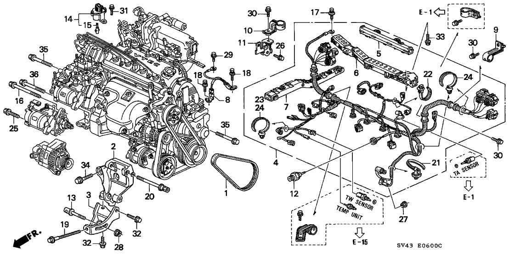
Show 35 catalog entries
Multiple entries for one callout can represent alternative sizes, suppliers or replacement numbers.
| Callout | Part number | Description | Catalog details |
|---|---|---|---|
| 2 | 31112-P0A-A00 | Bracket, Alternator | |
| 3 | 31113-P0A-A00 | Stay, Alternator | |
| 4 | 32110-P0A-A50 | Wire Harness, Engine | |
| 5 | 32127-P0A-A00 | Holder A, Harness | |
| 6 | 32128-P0A-A00 | Holder B, Harness | |
| 7 | 32129-P0A-A00 | Holder C, Harness | |
| 8 | 32610-SV4-000 | Cable, Sub-Ground (SOHC) | |
| 9 | 32741-P0A-A00 | Clamp A, Engine Harness | |
| 10 | 32746-P0A-A00 | Clamp F, Engine Wire Harness | |
| 11 | 32748-P13-000 | Stay, Wire Harness Clamp | |
| 12 | 37240-PT0-014 | Switch, Oil Pressure (TEC) | |
| 12 | 37240-PT0-023 | Switch, Oil Pressure (DENSO) | Replaced By: 37240-PT0-014 |
| 13 | 56995-PV0-000 | Bolt, Tensioner | |
| 14 | 78410-SV4-003 | Sensor Assy., Speed (MATSUSHITA) | |
| 15 | 78411-SM4-003 | Joint, Speed Sensor (MATSUSHITA) | |
| 16 | 90075-PD3-000 | Bolt, Flange (10X43) | |
| 17 | 90114-SM4-900 | Bolt (6X15) (MAIN FUSE BOX) | |
| 18 | 90149-SE0-003 | Bolt, Ground (6X16) | Require Quantity: 2 Package Quantity: 1 |
| 19 | 90311-PT0-000 | Bolt, Adjuster Special | |
| 20 | 90313-PT0-000 | Bolt, Special (10X90) | |
| 21 | 91506-P0A-A01 | Clip, Alternator Cord | |
| 22 | 91507-PT3-A01 | Band, Wire Harness (90.4MM) (BLACK) | |
| 24 | 91547-SF4-003 | Band, Wire Harness (123.5MM) (BLUE) | Require Quantity: 2 Package Quantity: 1 |
| 25 | 95701-10035-08 | Bolt, Flange (10X35) | |
| 26 | 93403-06012-08 | Bolt-Washer (6X12) | |
| 27 | 94050-06080 | Nut, Flange (6MM) | |
| 28 | 94050-08080 | Nut, Flange (8MM) | |
| 29 | 95701-06010-08 | Bolt, Flange (6X10) | |
| 30 | 95701-06012-08 | Bolt, Flange (6X12) | Require Quantity: 3 Package Quantity: 10 |
| 31 | 95701-06016-08 | Bolt, Flange (6X16) | Require Quantity: 2 Package Quantity: 1 |
| 32 | 95701-08016-08 | Bolt, Flange (8X16) | Require Quantity: 3 Package Quantity: 1 |
| 33 | 95701-08018-08 | Bolt, Flange (8X18) | Require Quantity: 2 Package Quantity: 1 |
| 34 | 95701-10035-08 | Bolt, Flange (10X35) | Require Quantity: 3 Package Quantity: 1 |
| 35 | 95701-12070-08 | Bolt, Flange (12X70) | Fit Note: Mfg.Origin: JPN Require Quantity: 4 Package Quantity: 1 |
| 35 | 95701-12070-08 | Bolt, Flange (12X70) | Fit Note: Mfg.Origin: USA Require Quantity: 6 Package Quantity: 1 |
Alternator (Denso)
Original catalog page · Open full-size image · Parts data (JSON)

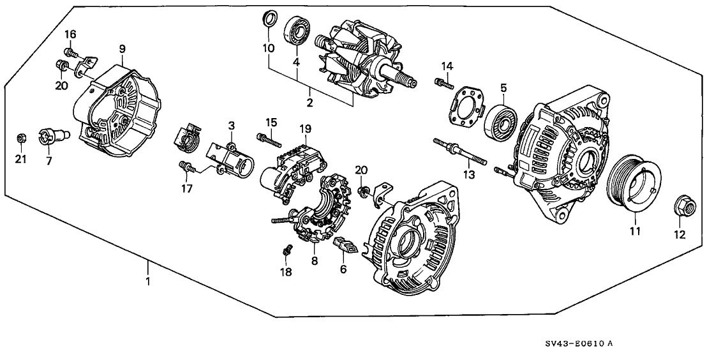
Show 22 catalog entries
Multiple entries for one callout can represent alternative sizes, suppliers or replacement numbers.
| Callout | Part number | Description | Catalog details |
|---|---|---|---|
| 1 | 31100-P0A-003 | Ac Generator Assy. | |
| 1 | 06311-P0A-A01RM | Alternator Core Id 9761219-549 101211-5490-5490 (DENSO) | |
| 2 | 31101-PV1-A01 | Rotor Assy. (N/A FOR USA: SEE ASSEMBLY) | |
| 3 | 31105-PR7-A01 | Holder Assy., Brush | |
| 4 | 31111-PT0-003 | Bearing, RR. Generator | |
| 5 | 31114-PT0-013 | Bearing, FR. Generator | |
| 6 | 31118-PT0-003 | Bush, Insulation | Require Quantity: 4 Package Quantity: 1 |
| 7 | 31119-PT0-003 | Bush, Insulation | |
| 8 | 31127-PT2-013 | Rectifier Assy. | |
| 9 | 31135-PT0-013 | Cover, RR. End | |
| 10 | 31138-PD1-004 | Cover, Bearing | |
| 11 | 31141-P0A-003 | Pulley | |
| 12 | 31142-PD1-004 | Nut, Pulley Lock | |
| 13 | 31145-PD1-004 | Bolt, Stud (6X68) | Require Quantity: 4 Package Quantity: 1 |
| 14 | 31146-PT0-003 | Screw | Require Quantity: 4 Package Quantity: 1 |
| 15 | 31147-PT0-003 | Screw-Washer | Require Quantity: 3 Package Quantity: 1 |
| 16 | 31147-P13-003 | Screw | |
| 17 | 31148-PT0-003 | Screw, Wave Washer | Require Quantity: 2 Package Quantity: 1 |
| 18 | 31148-P13-003 | Screw, Wave Washer | Require Quantity: 4 Package Quantity: 1 |
| 19 | 31150-PT2-003 | Regulator Assy. | Replaced By: 31150-P1E-A01 |
| 20 | 90231-PD1-014 | Nut-Washer (5MM) | Require Quantity: 7 Package Quantity: 1 |
| 21 | 90232-PT0-003 | Nut, Hex. (6MM) |
Power-Steering Pump – Bracket
Original catalog page · Open full-size image · Parts data (JSON)

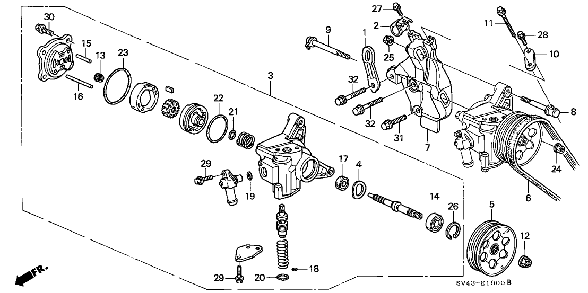
Show 34 catalog entries
Multiple entries for one callout can represent alternative sizes, suppliers or replacement numbers.
| Callout | Part number | Description | Catalog details |
|---|---|---|---|
| 1 | 11911-P0A-000 | Hanger, Engine | |
| 2 | 32750-P0A-A00 | Stay B, Engine Harness | |
| 3 | 56110-P0A-013 | Pump Sub-Assy., Power Steering (REMAN PART INCLUDES PULLEY) | |
| 4 | 56167-PY3-000 | Spacer, Pump Seal | |
| 5 | 56483-P0A-003 | Pulley, Power Steering Pump | Replaced By: 56483-P02-305 |
| 6 | 56992-P0A-J01 | Belt, Power Steering Pump (BANDO) | Replaced By: 56992-P0A-J03 |
| 7 | 56994-P0A-000 | Bracket, Power Steering Pump | |
| 8 | 56995-P0A-000 | Bolt, Power Steering Pump Adjusting | |
| 9 | 56996-P0A-000 | Bolt, Special (8X62) | |
| 10 | 56998-P0A-000 | Stay, Power Steering Pump Adjuster | |
| 11 | 90091-P0A-000 | Bolt, Power Steering Pump Adjusting | |
| 12 | 90305-P0A-003 | Nut, Power Steering Pulley | |
| 13 | 91021-148-004 | Bearing, Needle (1010) (NTN) | |
| 14 | 91048-PY3-003 | Bearing, Radial Ball (15X38X12) | |
| 15 | 91148-PY3-003 | Roller (5X26.8) | |
| 16 | 91149-PY3-003 | Roller (4.5X49.8) | |
| 17 | 91249-P02-003 | Seal, Power Steering Pump | Fit Note: Mfg.Origin: JPN |
| 17 | 91249-P0A-003 | Seal, Power Steering Pump (SHOWA) | Fit Note: Mfg.Origin: USA |
| 18 | 91317-P02-003 | O-Ring (5.8X1.9) (NOK) | Fit Note: Mfg.Origin: JPN |
| 18 | 91317-P0A-003 | O-Ring (5.8X1.9) (SHOWA) | Fit Note: Mfg.Origin: USA Replaced By: 91317-P02-003 |
| 19 | 91345-PY3-000 | O-Ring (13.0X1.9) | |
| 20 | 91346-PY3-000 | O-Ring (22.1X1.9) | |
| 21 | 91347-PY3-000 | O-Ring (16.8X1.9) | |
| 22 | 91348-PY3-000 | O-Ring (54.0X1.9) | |
| 23 | 91349-PY3-000 | O-Ring (68.5X1.9) | |
| 24 | 94050-08080 | Nut, Flange (8MM) | |
| 25 | 90202-P0A-A01 | Nut-Washer (8MM) | |
| 26 | 94520-38000 | Circlip (INNER) (38MM) | |
| 27 | 95701-06012-08 | Bolt, Flange (6X12) | |
| 28 | 95701-06014-08 | Bolt, Flange (6X14) | |
| 29 | 95701-06020-08 | Bolt, Flange (6X20) | Require Quantity: 4 Package Quantity: 1 |
| 30 | 95701-08028-08 | Bolt, Flange (8X28) | Require Quantity: 4 Package Quantity: 1 |
| 31 | 95701-10030-08 | Bolt, Flange (10X30) | |
| 32 | 95701-10040-08 | Bolt, Flange (10X40) | Require Quantity: 2 Package Quantity: 1 |
Clutch – Torque Converter
Original catalog page · Open full-size image · Parts data (JSON)

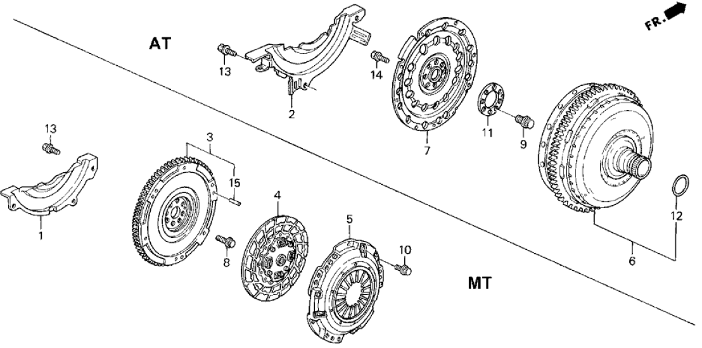
Show 8 catalog entries
Multiple entries for one callout can represent alternative sizes, suppliers or replacement numbers.
| Callout | Part number | Description | Catalog details |
|---|---|---|---|
| 2 | 21351-PT0-901 | Cover, Torque Converter Case | |
| 6 | 26000-P0A-000 | Converter Assy., Torque | Replaced By: 26000-P0A-305 |
| 7 | 26251-P0A-000 | Plate, Drive | |
| 9 | 90023-PA9-000 | Bolt, Special | Require Quantity: 8 Package Quantity: 1 |
| 11 | 90429-PC6-900 | Washer (40X86X2) | |
| 12 | 91302-639-000 | O-Ring (32X1.9) | |
| 13 | 93403-06012-08 | Bolt-Washer (6X12) | Require Quantity: 3 Package Quantity: 1 |
| 14 | 95701-06014-08 | Bolt, Flange (6X14) | Require Quantity: 8 Package Quantity: 1 |